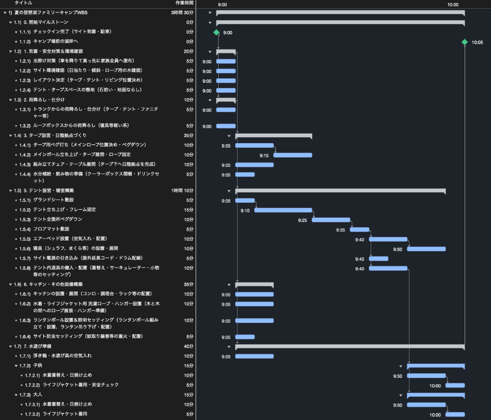
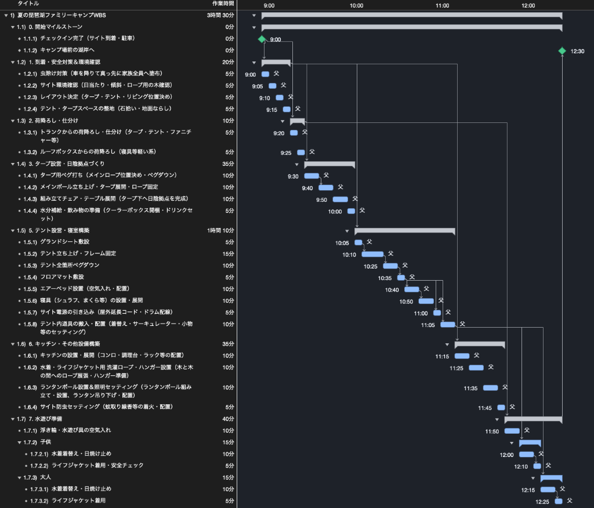
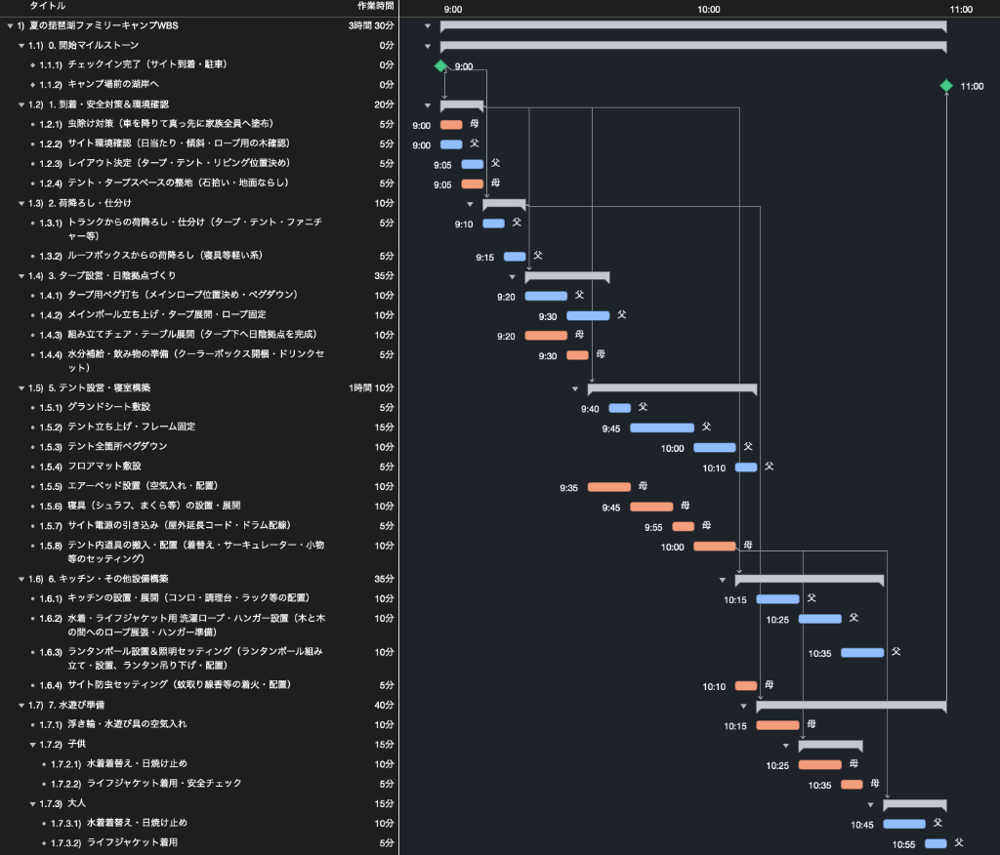
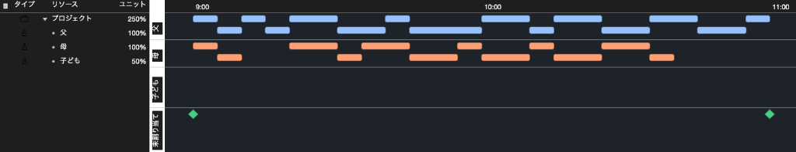
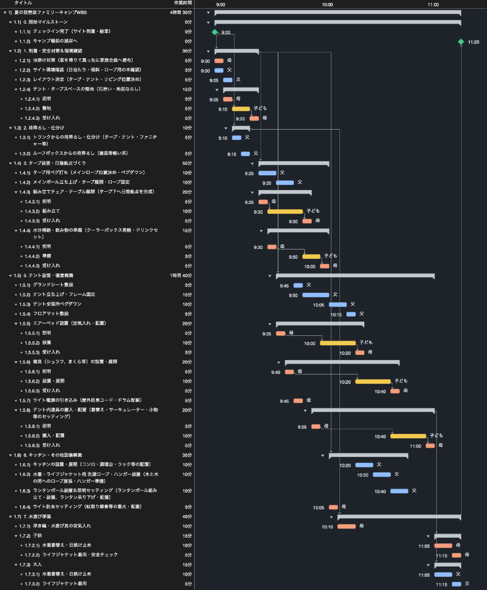
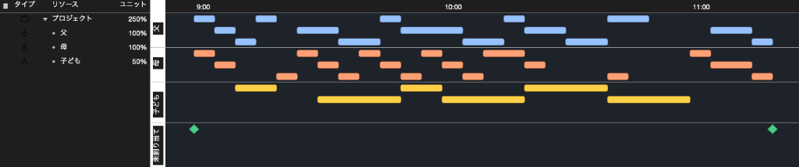
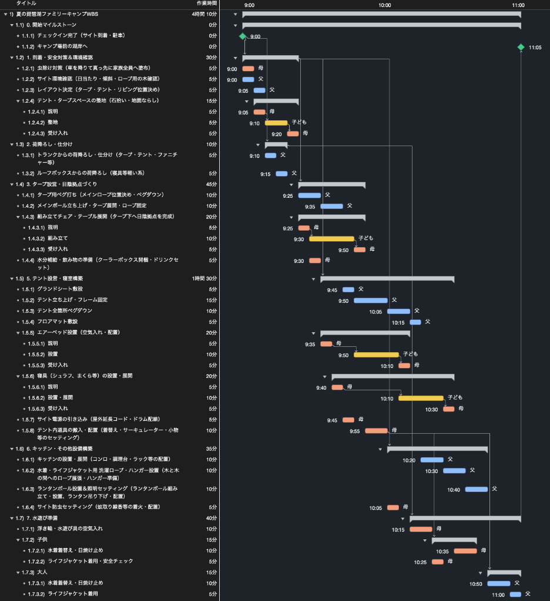
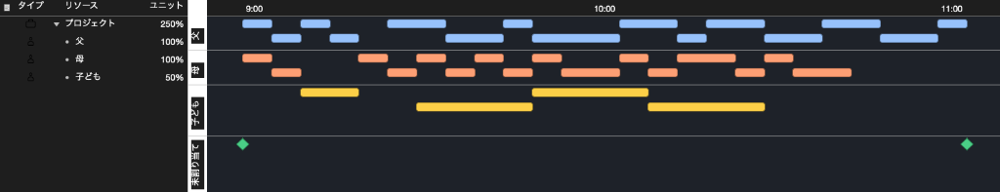

夏の琵琶湖ファミリーキャンプ設営のWBSを作ってみた
今回は「WBSで覗いてみた」シリーズとして、我が家が夏に行う琵琶湖ファミリーキャンプを題材に「キャンプ設営のWBS」を作成しました。
舞台は滋賀県の琵琶湖畔にあるキャンプ場です。アーリーチェックインを利用して朝9:00にサイトへ到着した時点からプロジェクトがスタートします。ゴールは、テントやタープの設営を終え、水着への着替えと浮き輪の準備を完了して、目の前の湖へ泳ぎに出ることです。
加えて、今回は「お手伝いしたい」という子どもの参画をどう扱うかもポイントです。
本記事では、この設営工程をWBSに落とし込み、リソース未割り当ての状態から、父1人の平準化、母も協力した2名体制での並行化、子どもの追加に伴う工期延伸、そして合流バッファを組み込んだ最適解まで、5つのステップでシミュレーションしていきます。
※そもそも「WBSとは何か？」「平準化とは何か？」について詳しく知りたい方は、こちらの記事「WBSの勘所」や「ガントチャートの決め手は平準化」も合わせてご覧ください。
1. 割り当てなし
まずは、サイト到着（AM 9:00）から湖へ泳ぎに行くまでに必要な全作業を洗い出し、タスクの前後関係のみを定義したWBSを作成してみます。
虫除けやサイトの環境確認、荷降ろしから始まり、タープ設営、テント設営、寝室（エアーベッドやシュラフ）のセッティング、キッチン・小物設営、そして水遊び道具の準備や着替えまで、合計25個のタスクを定義しました。

このガントチャートを見ると、全体の完了時刻は 10:05（所要時間：1時間05分）となっています。
しかし、タイムラインを確認すると、9:00〜9:10の時点で虫除け、環境確認、荷降ろし、整地など、最大9個のタスクが同時に進行しています。担当者（リソース）の制約を考慮していないため、理論上の最短時間を示すスケジュールとなります。
2. 父のみを設定し平準化した場合
続いて、すべての作業を父1人が担当した場合をシミュレーションしてみます。全タスクに父（稼働率100%）を割り当て、作業の重複を解消する平準化を行いました。

平準化を行った結果、並行していたすべてのタスクが直列化し、完了時刻は 12:30（所要時間：3時間30分）となりました。ステップ1の理論値と比べて3倍以上の工期となります。
父がボトルネックとなり、車からの荷降ろし、タープ・テントの組み立て、寝具の設置、浮き輪の準備までを1人で順番にこなす必要があります。特定のリソースに作業が集中すると作業が直列化し、スケジュールが大幅に延びることが分かります。
3. 母を追加した場合
そこで、母にも作業に加わってもらい、父母2名体制（父100%、母100%）で分業体制を組みました。
タープやテントの立ち上げなど2名での作業が適している工程は共同で行い、それ以外は役割を分担します。父がペグ打ちやテントのフレーム組み立て、寝室構築などを担当し、母がテーブルやチェアの展開、水分補給の準備、キッチン設置、浮き輪の準備などを並行して進めます。


2名体制で平準化した結果、完了時刻は 11:00（所要時間：2時間00分）となりました。ステップ2の12:30から1時間30分短縮され、午前中のうちに湖へ泳ぎに行けるスケジュールになります。
図4のリソースタイムラインを見ると、父が9:00の開始から11:00の完了まで隙間なく稼働し続けていることが分かります。一方で母は10:35頃に担当作業が完了しており、時間に余裕が生じています。このように、最も稼働負荷の高い父の作業が、プロジェクト全体の完了時刻を左右するボトルネックになっていることが確認できます。
4. 子どもを追加した場合
設営を進める中で、子どもから手伝いたいという希望があったため、子どもを新たなリソースとして投入してみます。
子どもが手伝える作業として、以下の4タスクを割り当てました。
- テント・タープスペースの整地（石拾い・地面ならし）
- 組み立てチェア・テーブルの展開
- エアーベッドの設置（空気入れ・配置）
- 寝具（シュラフ、まくら等）の設置・展開
子どもの作業能力は大人の半分（稼働率0.5）として設定しました。また、子どもに作業を任せるには事前の説明と、作業後の受け入れ検査（確認・手直し）が必要となります。その説明と検査を母が担当する前提でWBSを再構築し、平準化を行いました。


平準化した結果、完了時刻は 11:20（所要時間：2時間20分）となりました。大人2名体制（ステップ3の11:00完了）と比べて、工期が20分延びる結果となっています。
図6のリソースタイムラインを見ると、子どもへの作業説明や仕上がりの確認が発生したことで、母自身の担当作業が後ろ倒しになっています。その結果、母の作業が新たなボトルネックとなり、プロジェクト全体の完了時刻が延びる要因となりました。作業人数を増やしても、説明や確認の負担によって全体の進捗が遅れる場合があることを示しています。
5. 最適解のWBS
子どもの自立や体験の共有といった観点からも、子どもの参画を取りやめるのではなく、子どもの参加（4タスクの分担・説明・受け入れ検査）を維持したまま、タスクの順序やスケジューリングを見直した最適解のWBSを設計しました。


このスケジュールでは、母の受け入れ検査と設営作業の順序を整理し、父のメイン作業（テント設営や寝具設置）と並行して効率よく進むように配置しています。
その結果、完了時刻は 11:05（所要時間：2時間05分）となりました。ステップ4から15分短縮され、大人2名体制（ステップ3の11:00）と比較しても5分の差にとどめています。
また、図8のリソースタイムラインを見ると、母の作業ラインは 10:45 に完了しており、父の作業完了（11:05）までの間に約20分の空き時間が確保されています。
この空き時間は、作業の合流地点にあらかじめ確保された余裕時間（バッファ）として機能します。不確実性の高い子どもの作業において遅れが生じた場合でも、この20分のバッファが遅れを吸収するため、全体の完了時刻（11:05）に影響を与えることなく進めることができます。
終わりに
キャンプの設営工程をWBSに落とし込み、リソース平準化を行うことで、以下のようなプロジェクトマネジメントの観点を整理することができました。
- リソースを考慮しない計画は理論値にとどまること
- 特定の担当者に作業が集中すると直列化して工期が延びること
- 稼働負荷の高い担当者の作業が全体のボトルネックになること
- メンバーの追加には説明や確認の時間が伴うこと
- 遅れが出やすい作業の合流地点にはあらかじめ余裕（バッファ）を確保しておくこと
実際のプロジェクトや現場作業においても、リソースの負荷状況や不確実性を可視化し、適切なバッファを組み込むことが安定したスケジュール管理につながります。
日常の業務やプロジェクト計画におけるスケジュール設計の参考にしていただければ幸いです。